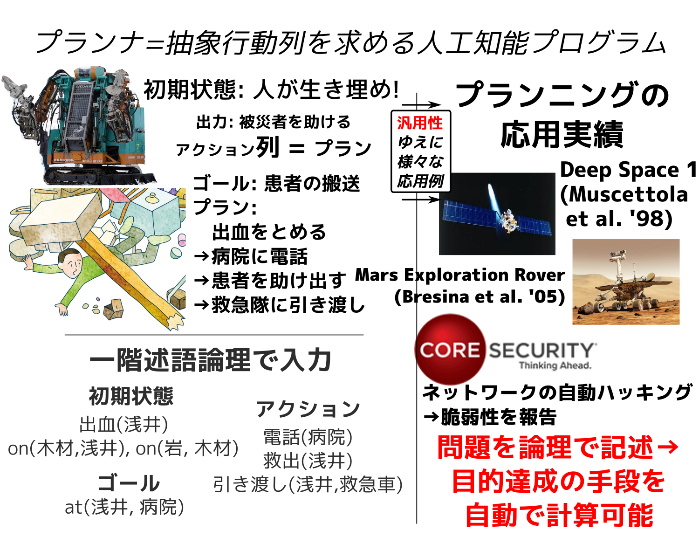
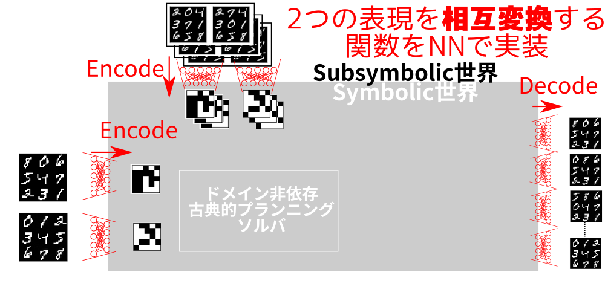

東京大学 総合文化研究科 広域科学専攻
博士3年 学振DC2 – 就活中!
Classical Planning
in Deep Latent Space:
記号を取り戻せ!
Made by guicho2.71828 (Masataro Asai)
1 もくじ
深層学習 (AutoEncoder, VAE) – は 解説の必要が無いはず なので
記号的AIプランニング
の話からはじめます
2 背景 – AIプランニング

2.1 誰?
And let me introduce these robots. The guy in the left is Astro boy.
2.1.1 誰?
As you know, he is a famous manga superhero invented by Tezuka Osamu in 50s,
2.1.2 誰?

and he can think, hear, speak, act. he also has emotions.
2.1.3 誰?

In contrast, the guy in the right is a real robot that is actually in use @ fukuoka prefecture for the rescue purpose.. His name is T-52 Enryu, developped by a Japanese company Temzak. He is huge and powerful – about 4 meters in height and can carry things which is as heavy as 500kg. Well, so, in a sense, he is also a superhero in the real disastrous situation.
2.1.4 誰?

But does he have feelings or can he think? Can he even move around by his own?
2.1.5 誰?
No. It requires full human intervention — it is indeed operated by a driver who gets in or by a remote control. It is more like a super-sophisticated shovel car.
2.2 自律行動のための自動プランナ (≠ モータ制御)
研究テーマのプランニングは、ロボットに、人間の助けを借りず、いかに自律して行動させるかを扱います。 これをモデル化したプランニング問題は、具体的な行動の列を求める 組合せ最適化問題です。
プランニング問題のタスクは、 センサーから初期状態とゴールを受け取って、被災者を助ける正しい手順を出力することです。
たとえば、この図では男性が瓦礫に埋まって助けを求めています。 プランニング機能のあるロボットは、コレに対して「男性を助けよ」という大まかな指示を受けます。
2.3 自律行動のための自動プランナ (≠ モータ制御)
指示の内容には、図のように初期状態とゴール、許可された行動のリストが入っています。 ロボットは、自動プランニングにより、人間の代わりに適切な行動を組み立てて、ゴールを自動で達成します。
2.4 自律行動のための自動プランナ (≠ モータ制御)

プランニングは汎用な枠組みなので、災害救助以外にも様々な問題に適用することができます。 現実の応用例では「宇宙探査機運行問題」や「企業ネットワーク脆弱性問題」も表現できます。
このように、プランニングは、難しい問題を汎用性を失わずに解くことを目指します。
2.5 AIプランニングの Killer App
- 人が高価or不可能な作業
- 原発, 宇宙空間, 火星, 深海
- 正しさと最適性の理論保証が必要なミッションクリティカルシステム
- 製造システム、運送 (時間=お金)
人工衛星 (燃料使いきれば運用終了)
間違った解は許されない
- 思考過程を説明可能なシステム
- レスキュー・宇宙船 (人間の安全がかかっている)

3 古典プランニング問題 (決定的,完全情報) – Blocksworld
非古典的なさまざまな拡張
(並列アクション,POMDP,HTN… どのAIの教科書にものっている)
3.1 アクション = 条件付き状態遷移
アクション (move ?X ?Y)
?X, ?Y : 変数。 値 BLOCK-A, BLOCK-B などを適用して使う
条件 と 効果 で構成される
条件 : 実行に必要な条件を表す命題
(clear ?X) : 積み木 ?X の上が空
(clear ?Y) : 積み木 ?Y の上に空
効果 : 前後の状態の 差分 を表す命題
(on ?X ?Y) を 追加 : ?Y の上は ?X
(clear ?Y) を 削除
(:action move :parameters (?X ?Y) :preconditions (and (clear ?X) ; (1) (clear ?Y)) ; (2) :effect (and (on ?X ?Y) ; (3) (not ; (4) (clear ?Y))))
モデリング言語 PDDL で記述
3.2 プランニング = グラフ探索
ノード : 状態 = 命題の集合 ⇒ (on A B), (clear A) など
辺 : アクション ⇒ (move A B) 等
*1 [Helmert, 2006] [Richter, 2010]
3.3 Q. いま はやり のDeep Learningとの違いは?
A. レイヤが違う
機械学習・Neural Networks
for 認識・反射
- 入力 は Subsymbolic (連続値)
画像、音声、非構造化テキスト:
- 感覚的知能:
反応, 直後 の行動の決定
パブロフの犬 : 餌を認知→よだれ
自動運転 : 赤信号,人 → 止まる.
翻訳 : 文章 → 文章
囲碁局面の評価関数 : 局面 → 勝率
☺ 効率よく 1-to-1 mapping
☹ 単純作業
推論・探索
for プランニング・ゲーム・定理証明
- 入出力は Symbolic
論理 オブジェクト ルール
- 論理・推論による知能:
未来に渡る 戦略の決定
(戦略 = 行動の 列や木)
レスキューロボ : ゴール = 被災者生存
証明器 : ゴール = QED
コンパイラ : 命令列の生成
囲碁,将棋 : ゴール = 勝利
☺ 順序制約+複雑な作業
- AlphaGo = Subsymbolic (DLNNによる評価関数) + Symbolic (MCTSによる探索)
3.4 既存の有名システム
AlphaGo = Subsymbolic (NNによる評価関数) + Symbolic (MCTSによる探索)
- ただし ドメイン依存 – 囲碁に特化, "マス目"や"石"といった概念をハードコード
- 膨大な棋譜が必要 — 運用データがない環境(e.g.火星)には適用不能
- 人って模範解答がないと行動できませんか? 真の自律機械は前例無しでも行動可能
DQN = Subsymbolic (DLNN) + 強化学習 (DLNN)
様々な Atari Game につかえる汎用フレームワーク (Invader, Packman…) だが
- RLのActing: 学習したpolicyに従ってgreedyに行動
- Atariゲームは 脊髄反射で生き残ることが可能 → 複雑な論理思考はいらない!
4 記号的AIによる論理推論の重要性

それと去年の松尾先生
5 ゴール
Deep Learning
＋
古典プランニング
5.1 利点
認知 はDLNNベース
— 柔軟、ロバスト、DL技術の発展を利用できる
意思決定 を古典プランニングで
— 強化学習にない理論的性質
完全性 (解があれば必ず見つける), 解の最適性 (必ず最適解を返す)
— 意思決定が学習に依存しない
教師なし (データがいらない), 説明可能 (記号処理による探索)
5.2 3x3 スライディング タイル パズル (8-Puzzle)
空きパネルとそれ以外を移動させることで絵を完成させるパズル
古くからあるAI問題, 可能な曲面の数は 362880 個
4x4、5x5のパズルは 全探索では 探索空間が指数爆発→メモリ不足で解けない
古典プランニングの理論保証付き下界関数を使えば 最適解を求められる

5.3 ゴール: 棋譜・事前知識なし 画像のみで8パズルを解くAI
DLNN + 古典プランニング
事前知識なし : 「9マスある」「動くパネル」など人の与えた ラベル・シンボルなし
棋譜なし : AlphaGoは 棋譜から学習した評価関数で解く → 理論保証付き下界関数 で解く
5.4 ゴール: 棋譜・事前知識なし、画像のみで 任意の問題 を解くAI
事前知識なしで解ける
＝ 任意の問題を解ける
ハノイの塔

Lights-Out

6 -
システム概要
6.1 入力1: Training Inputs – Image Pairs
実行可能なアクションの例を示す画像ペア
6.2 入力1: Training Inputs – Image Pairs
6.3 入力2: Planning Inputs – Initial Image & Goal Image
探すべきプランの 始点と終点 にある2つの状態 を示す画像

6.4 論文のゴール: 棋譜なし・事前知識なし 訓練画像のみ 完全自動で 任意の問題 を解くAIシステムを作る
6.5 論文のゴール: 棋譜なし・事前知識なし 訓練画像のみ 完全自動で 任意の問題 を解くAIシステムを作る
7 実行例 (MNIST 8-puzzle)

最適解が知られている問題の画像版
→ 31手の最適解を返却
7.1 写実的な画像 + 明確に分かれていないタイルでの実行例 (マンドリル 8-puzzle)

→ 同様に最適解を返却
7.2 実行例 (ハノイの塔)
全く意味の異なる入力でも解けることを示す


→ 同様に最適解を返却 (7手,15手)
他にも2種類の問題で実験
7.3 ノイズのある入力にも対応

→ 同様に最適解を返却
8 動くのはわかった。どうやって作ったの？
基本アイディア: DLNN + Classical Planner
- 1. ラベル無し画像データからなんとかして知識を取り出したい
- どんな知識をどうやって? ← 自明でない
- 2. NNの出力は Subsymbolic: 実数値 ↔ Symbolic な 離散値・命題 がほしい
- Symbol Grounding ← 自明でない
- 3. 機械が作った Symbol は 人間には理解不能
- 意味不明の記号列をどうやって人の理解できる形式にするか？ ← 自明でない
9 Latent-Space Planner: LatPlan
3つの課題を同時に解決する アーキテクチャ
本プレゼンテーションでは、 LatPlan と その 1実装 LatPlanα を紹介
10 Step 1: State Autoencoder
Symbolic/Subsymbolic の壁を超える ために・・・

10.1 AutoEncoder (おさらい)
教師なし学習
入力空間 S を Latent Space L に 圧縮
かつ S に 展開 して 元の画像に損失無く戻す。

→ データ \(x\) をコンパクトな Latent vector \(z\) に変換/逆変換するNNを学習
→ しかし、 ✘ Latent vector は 実数値 のよくわからん値
10.2 Gumbel-Softmax Reparametrization (Jang, Gu, ICLR2017)
中間層がカテゴリカル分布(離散値)なVAEを作る手法
VAE: 中間層が特定の分布を持つAEのこと。 下図: カテゴリ数8, 30変数 の GumbelSoftmax
鍵となるアイディア: この離散表現は記号的ソルバで使用可能
特に カテゴリ数2 → N個の命題(true/false)に直接マップ可能
10.3 Step 1: State Autoencoder

SAEを学習させることにより以下の関数を得る:
- \(b = Encode(r)\) : 生データ \(r\) を 命題列 \(b\) に変換する関数
- \(\tilde{r} = Decode(b)\) : 命題列 \(b\) を 生データ \(\tilde{r}\) に変換する関数
11 Step 2: Domain Acquisition (ドメイン獲得)
bitvector から PDDL モデルを生成する
11.1 LatPlan の実装 LatPlan α での アクション集合の生成
個別アクション遷移をPDDLアクション表現にマップ
0011 → 0101 ↓ (:action ... :precondition (and (b0-false) (b1-false) (b2-true) (b3-true)) ; 遷移前の状態 :effect (and (not (b1-false)) (b1-true) ; false命題を取り除き、true命題を追加 (not (b2-true)) (b2-false)))
ポイント:
\(i\) ビット目が 1 → 命題 (\(b_i\)-true)
\(i\) ビット目が 0 → 命題 (\(b_i\)-false)
12 Step 3: PDDL モデルを解く
13 Step 4: 記号的プラン(人には理解不能)を 人の理解できる画像に戻す
14 わざわざプランニングソルバを使う理由は?
なぜ、ただの幅優先やDijkstra探索ではだめなの?
→ 大規模な問題(5x5パズル等)で 指数爆発 し、非実用的
→ ドメイン非依存下界関数 (PDB) による枝刈り が、この未知のドメインでも有効
| 探索ノード数 | Dijkstra | A*+PDB | 高速化 |
|---|---|---|---|
| MNIST 8-puzzle | 193924 | 109096 | x2 |
| MNIST 8-puzzle | 201156 | 111642 | x2 |
| MNIST 8-puzzle | 186767 | 84561 | x2 |
| MNIST 8-puzzle | 183336 | 82518 | x2 |
| MNIST 8-puzzle | 169907 | 52084 | x3 |
| MNIST 8-puzzle | 130863 | 26967 | x5 |
| Hanoi (4 peg) | 55 | 17 | x3 |
| LightsOut (4x4) | 952 | 27 | x30 |
| Spiral LightsOut (3x3) | 522 | 214 | x2.5 |
| Mandrill 8-puzzle | 335378 | 88851 | x4 |
→ プランナを使えば既存の様々な下界関数を利用できる!
15 Conclusion
- 入力: ラベル無しの 状態遷移の画像・初期画像・ゴール画像
- 出力: ゴールを達成するためのプランを表す画像列
- State AutoEncoder(SAE): Gumbel-Softmaxを用いたVAE
- 成果 : SAEによって生データから命題を生成 → 古典プランニング問題として解ける ことを実証
- 限りなく単純に作った プロトタイプ
→ 記号/非記号AI分野の様々な技術を取り入れることで より発展
JSAI予稿論文は 短縮版です。
Arxiv 1705.00154 : Classical Planning in Deep Latent Space: Bridging the Subsymbolic-Symbolic Boundary.
KEPS17採択版: Classical Planning in Deep Latent Space: From Unlabeled Images to PDDL (and back). Knowledge Engineering for Planning and Scheduling (KEPS) Workshop in ICAPS2017
16 LatPlan の実装 LatPlan α でのSAE
Keras, Adam optimizer (learning rate:0.001)
1764(42x42)
[→FC(4000,ReLu)→Batchnorm→Dropout(0.4)] × 2
→FC(49,GumbelSoftmax) (variational loss)
[→FC(4000,ReLu)→Batchnorm→Dropout(0.4)] × 2
→1764(42x42) (loss: Binary crossentropy)
- なぜ全結合??
- 論文の主題は SAEで命題を作る方針がそもそもうまく行くかどうか
→余計な要素を省いて限りなくシンプルに
- 8-パズルでの訓練
- 可能な全状態 (362880) 中 12000 枚 で訓練 → 汎化能力あり
17 Gumbel-Softmax
\(N\times M\) 行列を出力, \(N\): 変数の数 \(M\): カテゴリの数
18 LatPlan の実装 LatPlan α での アクション集合の生成
全遷移の画像ペア \(R\) を生成 → \(Encode(R)\) → PDDL
なぜ? → 本来は汎化されたルールを得られると良い
未汎化の遷移 0011 → 0101 (遷移前の全ビットを指定) 汎化された遷移 *01* → *10* (一部のビットのみを指定)
- LatPlanα: 一般化を行わない
- 論文の主題は SAEで命題を作る方針がそもそもうまく行くかどうか
→余計な要素を省いて限りなくシンプルに
汎化ルール → 他の Domain Acquisition 学習機1 をそのまま使えば良い (Future work)
[Konidaris et.al. 14; Cresswell et al 13]
19 他の実行例 (Lights Out)
8-puzzle も hanoi も 「物体」のようなものが「消えない」という性質がある。
この実験 は このシステムがそのような特性に左右されないことを示す
→ 同様に最適解を返却
20 他の実行例 (Skewed Lights Out)
8-puzzle, hanoi, LightsOut は 「物体」のようなものが格子状に並んでいる
この実験 は このシステムがそのような特性に左右されないことを示す

→ 同様に最適解を返却
21 正しくない解が出力される可能性はないの？
ニューラルネットの誤差が大きい場合のみ発生 (収束保証は \(t\rightarrow \infty\) のみ, not 実時間)
→ でたらめなシンボル/グラフが生成
→ でたらめな離散グラフ上の正しいプラン が生成 / グラフが非連結 で解なし
(アルゴリズムの完全性、健全性、最適性により保証)
→ でたらめな画像プラン / 解が存在しない
LatPlan に 認識の間違いはある が 判断の間違いはない!
(完全性,最適性) →強化学習に対する強み
21.1 強化学習
意思決定も学習に依存する
→ 個別の学習結果に理論保証はない。
→ Policy関数が正しく学習されなかった局面では失敗する。
セドルはそれから、左手で首の後ろに触れたまま次の手を打った。… コンピューターは驚きを隠せなかった。もちろん目をパチクリさせたわけではないが、次の1手はひどいものだった。 [白78手について]
Cade Metz. "Two Moves, that Redifined the Future." Wired, 2016
RLは 判断に間違いがあり得る。
22 Future Work (SAE)
SAEは命題の検出が可能 (状態s = p∧q∧r…)
→ 一階述語への一般化 (述語 p(a,b) )
→ オブジェクトの検出 (引数 a,b) が必要
→ 物体認識(R-CNN) などを内部で用いる より複雑なSAEの使用で対処可能
23 Future Work (問題ドメイン)
LatPlan は あくまで アーキテクチャ
SAE の実装を変えれば(原理的には)画像以外の任意の入力データに対応可能なはず
- テキスト用のAE [Li et.al. 2015]、 音声用のAE [Deng, Li, et al. 2010]
- 改造してSAEにすれば・・・
- Here's an Apple, Here's a pen → oh, ApplePen!
- SAEを学習してプランナで解く → 数千ステップの高速な言語レベル推論が可能に
"A hierarchical neural autoencoder for paragraphs and documents." (2015)
"Binary coding of speech spectrograms using a deep auto-encoder." (2010)
24 記号・記号処理とは
記号の特徴と強み : なぜ記号は強力な抽象化の道具なのか？
- 理解する必要がない
- ルールを機械的に適用することだけによって論理推論を行える
シンボル \(X\) の意味がリンゴだろうと車だろうと ルールが正しければ推論できる
- ドメイン非依存ソルバの顕著な例: mystery ドメインと nomystery ドメイン
シンボル名だけデタラメ にした荷物配送ベンチマーク (truck → shark)
(名前を見て特殊アルゴリズムを使う不正を禁じるため)
- ドメイン非依存ソルバの顕著な例: mystery ドメインと nomystery ドメイン
- 組み合わせが可能
- Latent vector は 複数の命題の連言 (and) → modus ponens が適用可能になる
探索の下界関数はこれらを適用してゴールへの近さを見積もる
- ノイズを含む画像ピクセルはそのままではシンボルになれない
- ノイズの有無で画像は全く異なるデータになる → 何か 共通の特徴 の抽出が必要
25 Arxiv版を上げた際のTwitterでの議論
AlphaGo チーム全員:
「古典プランニング超大事!」
26 日本のプランニング研究者: DL研究者よりさらに少ない
27 評価
GTX1070, PhenomII X6 (3.4GHz OC), 16GB Mem
- 学習: 30分程度
- 求解: 3秒程度
27.1 State AutoEncoder
1: Train入力 2: 生Latent 3: 生Autoencoding 4: 切り捨てLatent 5: 切り捨てLatentのAutoencoding

27.2 State AutoEncoder
1: Test入力 2: 生Latent 3: 生Autoencoding 4: 切り捨てLatent 5: 切り捨てLatentのAutoencoding
Test 入力: 訓練画像に含まれていない画像 (注!)

きちんと学習できている
27.3 State AutoEncoder
入力2: 初期画像とゴール画像

27.4 PDDL Domain Definition
\(N=25\) の例
(define (domain latent) (:requirements :strips :negative-preconditions) (:predicates (z0) (z1) (z2) (z3) (z4) (z5) (z6) (z7) (z8) (z9) (z10) (z11) (z12) (z13) (z14) (z15) (z16) (z17) (z18) (z19) (z20) (z21) (z22) (z23) (z24)) (:action a10000010010110111100011111000010001011111110011111 :parameters () :precondition (and (z0) (not (z1)) (not (z2)) (not (z3)) (not (z4)) (not (z5)) (z6) (not (z7)) (not (z8)) (z9) (not (z10)) (z11) (z12) (not (z13)) (z14) (z15) (z16) (z17) (not (z18)) (not (z19)) (not (z20)) (z21) (z22) (z23) (z24)) :effect (and (z5) (not (z6)) (z13) (z20))) (:action a10000010010110111100011110000001001011011110001110 ...
27.5 先ほどの結果